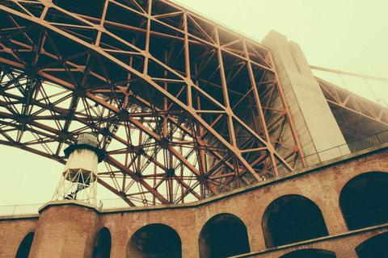

Maren Hassinger Won’t Be Weighed Down
来源：ARTnews



Browse the Top 200
来源：ARTnews

Read/Watch/Listen
来源：Artforum

Sun Day Red 携手 VESSEL Golf 推出 Tigris Slamus 系列
来源：Hypebeast

《Twilight》x Crocs 推出「Edward and Bella」Classic Clog
来源：Hypebeast


Louis Vuitton x Keith Haring 联乘香水系列发售情报
来源：Hypebeast

Nike 宣布与 Formula 1 展开长期合作伙伴关系，将于 2027 年正式启动
来源：Hypebeast


Labubu 如何避免成为下一个 BE@RBRICK？
来源：HB·POPMART
POP MART x UNIQLO UT 最新联名系列「The Monsters」发布
来源：HB·POPMART
THE MONSTERS 森林秘密基地登陆杭州嘉里中心
来源：HB·POPMART
POP MART 释出全新 MEGA SPACE MOLLY 1000% RX-78-2 高达特别版
来源：HB·POPMART
走进 POP MART 成都「炉火纯青·燃」特别活动
来源：HB·POPMART
KAWS:HOLIDAY 落地杭州西湖：30 米机器人 COMPANION 卧赏中秋月
来源：HB·KAWS
UNIQLO 携手 KAWS 发布全新 UT 系列「KAWS UNIVERSE」
来源：HB·KAWS
Art Institute of Chicago
来源：Artforum
Wallace Chan: Vessels of Other Worlds
来源：Artforum
The Writing on the Walls
来源：Artforum
Ground Rules: Judd’s Adaptive Reuse
来源：Artforum
Chloe Aridjis’s Phone Book
来源：Artforum
My Hongshan Jade Ornaments
来源：Artforum
Art Week NYC at the Metropolitan Museum of Art in partnership with the New York City Council
来源：Artforum
Under the Influence
来源：Artforum
Diego Marcon’s Endless Sum
来源：Artforum
Khalil Rabah’s Art of Relocation
来源：Artforum
Sfeir-Semler Gallery | Beirut
来源：Artforum